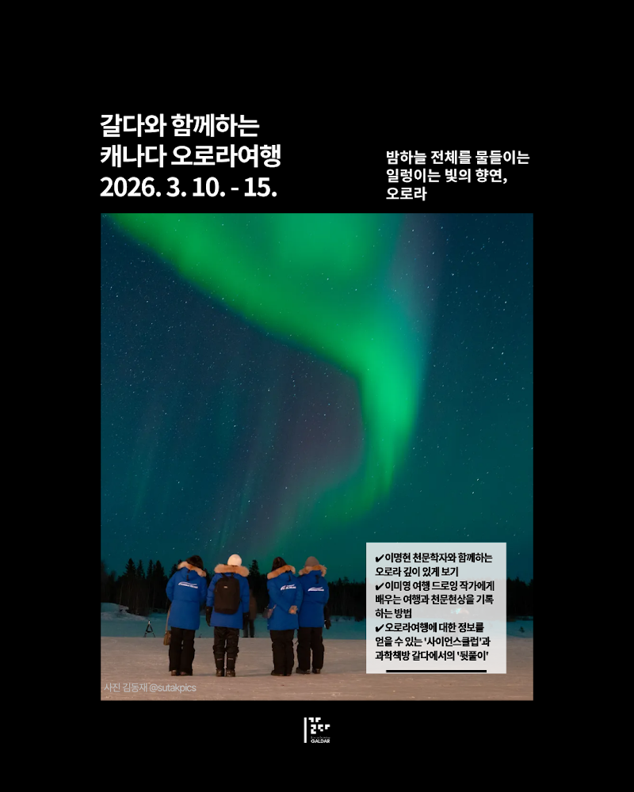

여행 소개
평생에 한 번은 오로라! 21년만에 발생한 초강력 태양폭풍, 지금이 떠날 때!
-천문학자 이명현과 드로잉작가 어슬렁과 함께하는 오로라 관측 여행
여행신청서를 작성해주시고, 예약금 50만원(1인)을 입금해주시면 신청이 완료됩니다. 신청완료된 분들께 개별 연락을 드립니다.
-오로라빌리지 4박(싱글룸):572만원
-오로라빌리지 4박(2인1실 기준):497만원
-오로라빌리지 4박(3인1실 기준):493만원
*항공료 포함 금액

프로그램 상세 안내
신청방법: 👉🏼여행 신청서(구글폼) 작성👈🏼 + 예약금(50만원/1인) 입금
과학책방 갈다 홈페이지를 통해 참여자의 정보를 포함한 여행 신청서(구글폼)를 제출 후 예약금을 입금해주세요.
여행사에서 항공권 발권 및 여행자 정보 확인을 위해 개별 연락을 드립니다.
여행 잔금을 납부 한 뒤, 출발 1주~2주 전 예약 확인서를 전달드리며 출발일정에 대해 안내드립니다.
예약금 입금계좌 : 농협 355-0064-0843-63 주식회사 갈다
여러분의 여행 버킷리스트에 하나쯤 들어있는 ‘오로라’
21년만에 발생한 초강력 태양폭풍, 지금이 바로 오로라를 보러 떠날 타이밍!
천문학자 이명현과 드로잉작가 어슬렁과 함께 해요!
오로라를 기다리는 느슨한 마음
과학책방 갈다와 함께하는 오로라 여행은 조금 느린 여행입니다.
해야 할 일이 너무 많지도 않고, 여행 일정이 빡빡하지도 않습니다. 대신 거대한 자연현상을 마주하며 인간의 하찮음을 깨닫고 인생을 성찰할 수 있는 시간을 제공합니다.
자연현상을 즐길 마음가짐을 가진 사람들이 모여 있는 과학책방 갈다와 함께 자연과 스스로의 내면을 관찰하는 기회를 가져보세요.
거기에 더해 천문학자에게 오로라와 밤하늘에 대한 천문학 강의를 통해 보는 것에 깊이감을 더하고, 여행드로잉 작가에게 여행과 천문현상을 기록하는 또 하나의 방법을 배울 수 있습니다.
과학책방 갈다와 함께 하는 2025 캐나다 오로라여행 포인트
✔️ 이명현 천문학자와 함께하는 오로라 깊이 있게 보기
✔️ 이미영 여행 드로잉 작가에게 배우는 여행과 천문현상을 기록하는 방법
✔️ 오로라여행에 대한 정보를 얻을 수 있는 '사전모임'과 과학책방 갈다에서의 '뒷풀이'
신청방법: 👉🏼여행 신청서(구글폼) 작성👈🏼 + 예약금(50만원/1인) 입금
과학책방 갈다 홈페이지를 통해 참여자의 정보를 포함한 여행 신청서(구글폼)를 제출 후 예약금을 입금해주세요.
여행사에서 항공권 발권 및 여행자 정보 확인을 위해 개별 연락을 드립니다.
여행 잔금을 납부 한 뒤, 출발 1주~2주 전 예약 확인서를 전달드리며 출발일정에 대해 안내드립니다.
예약금 입금계좌 : 농협 355-0064-0843-63 주식회사 갈다
** 항공권은 발권이후 항공사의 취소 규정의 패널티 이외에 여행사의 발권/ 환불 대행 수수료 1인 기준 5만원이 별도 발생합니다
** 여행 전체 취소에 대해서는 여행사에서 예약 고객에게 별도 취소 규정을 안내드립니다.
1. 오로라빌리지 4박 패키지(싱글룸 기준): 572만원
2. 오로라빌리지 4박 패키지(2인 1실 기준):497만원
3. 오로라빌리지 4박 패키지(3인1실 기준): 493만원
** 항공료(이코노미클래스)+숙박+여행자보험 포함 금액이며, 식비 및 개인 경비는 불포함입니다.
** 상기요금은 성인 요금이며, 12세 미만 어린이 의 경우 성인 2인과 함께 방을 사용할 경우 성인요금의 80% 적용
** 만일 성인 1명과 12세 미만 어린이 2인 1실 사용시 성인요금의 85% 적용 됩니다.
** 4인 1실 별도 문의
2026 캐나다 오로라여행 기타 안내사항
Q. 예약 프로세스가 어떻게 되나요?
A. 과학책방 갈다 홈페이지를 통해 참여자의 정보를 포함한 여행 신청서(구글폼)를 제출해주시고 예약금(1인 기준 50만원)을 입금해주세요. 확인 후, 여행사에서 항공권 발권 및 여행자 정보 확인을 위해 개별 연락을 드립니다. 여행 잔금을 납부 한 뒤, 출발 1주~2주 전 예약 확인서를 전달드리며 출발일정에 대해 안내드립니다.
Q. 여행에 참여하면, 오로라는 무조건 보게 되나요?
A. 오로라는 자연현상에 속합니다. 일정 정도의 데이터 검증을 통해서 높은 확률이 되는 곳을 선택한 일정을 준비했지만, 100%관측을 보장하는 것은 아닙니다. 다만, 오로라 관측성공률은 (지난 20년의 데이터를 기준으로) 옐로나이프 3일 정도 체류시 95%정도의 관측 성공률, 4일 체류시 97%정도의 성공률을 보여줍니다.
Q. 이번 기회에 오로라를 좀 더 보거나, 일정을 연장해서 다른 지역을 여행하고 싶어요
A. 별도 문의 주시면 일정에 맞는 항공권과 숙소를 안내 드리도록 하겠습니다. 기본 일정 후 추가적인 일정을 원하신 경우 개별적인 니즈는 여행사 지역담당자와 상의를 해주시면 합리적인 일정과 가격을 안내 받으실 수 있습니다.
Q. 여권과 비자 발권은 어떻게 준비하면 되나요?
A. 여권 유효기간은 출발 및 입국 기준 6개월 이상 유효해야 하며, 여권 서명란에 반드시 자필서명이 되어 있어야 합니다. 1회 사용한 단수여권은 재사용이 불가능하므로, 반드시 재발급 받으시기 바랍니다. 그리고 캐나다 여행 시, 사전에 캐나다 전자 여행 허가 승인(eTA)을 꼭 받으셔야 합니다. 입국심사는 입국심사관의 고유권한이므로 당사가 책임지지 않습니다.
Q. 1인실 혹은 3인실을 이용할 수 있나요?
A. 네, 1인실(추가비용 발생)또는 3,4인실을 원하실 경우 문의사항에 남겨주시면 상세 금액을 안내해 드리겠습니다.
Q. 본 프로그램의 참여 연령 제한이 있나요?
A. 아니오, 참여 연령의 제한은 없습니다. 12세 미만, 어린이 요금은 상품에 따라 성인 요금의 50~80%로 상이하므로 별도 문의 바랍니다. 보호자 동반 없이 미성년자만 본 프로그램에 참여하는 것은 불가능합니다.
본 여행의 콘텐츠는 과학문화콘텐츠를 큐레이션하고 제안하는 과학콘텐츠그룹 갈다가,
여행 전반에 대한 준비와 지원은 테마여행 전문 여행사인 파로스 여행사가 함께 합니다.